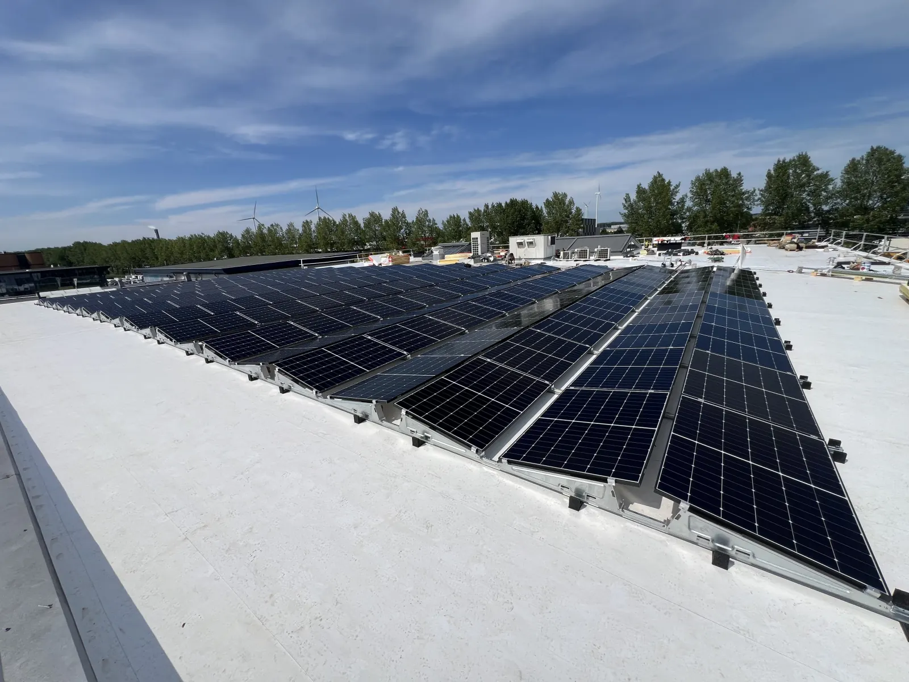
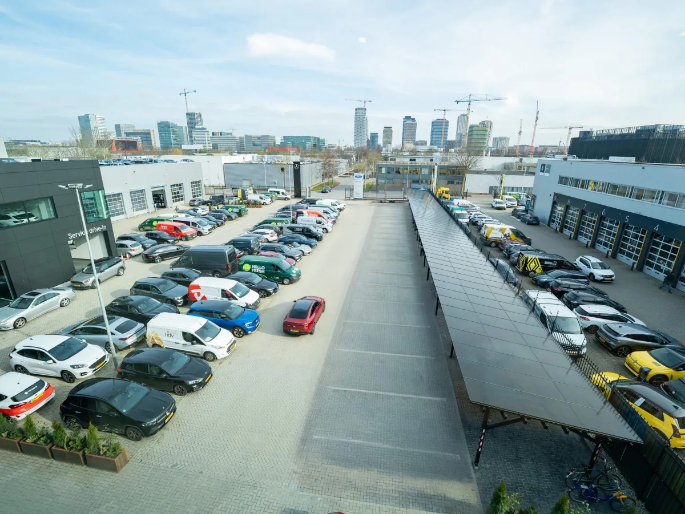

Klaar voor een elektrische vloot. Niet voor een grotere aansluiting.
Transportbedrijven en distributiecentra elektrificeren hun wagenpark sneller dan het net meegroeit. Vibe maakt laadvermogen vrij binnen de aansluiting die er al ligt — met opslag, eigen opwek en laadinfrastructuur die op elkaar zijn afgestemd.

De vloot wordt elektrisch. De meterkast niet.
Vier krachten komen tegelijk samen op dezelfde kabel. Elk afzonderlijk is er iets voor te regelen; samen lopen ze vast op het vermogen dat beschikbaar is.
Zero-emissiezones
Steeds meer Nederlandse steden hanteren een zero-emissiezone voor bestel- en vrachtverkeer. Wie daar moet leveren, heeft elektrische voertuigen nodig — en dus laadvermogen op het depot.
Wachttijd op het net
In grote delen van Nederland geeft de netbeheerder geen extra transportvermogen uit. Een verzwaringsaanvraag kent een doorlooptijd van jaren, zonder zekerheid over de uitkomst.
Gelijktijdigheid
Voertuigen komen in blokken terug. Precies dan draaien ook de koeling en de sorteerinstallatie. Die samenval bepaalt uw piek — en daarmee uw tarief.
Koeling kent geen pauze
Koel- en vrieshuizen hebben een basislast die dag en nacht doorloopt en nooit mag wijken voor een laadsessie.
Energie in de kostprijs
Voor een elektrische vloot verschuift brandstof naar de energierekening. Wanneer u laadt, bepaalt wat die rit kost.
Het dak ligt leeg
Distributiedaken zijn groot en onbenut. Zonder opslag komt die opwek vrij op het moment dat de voertuigen juist onderweg zijn.
Eén terrein, één energiesysteem.
De aansluiting blijft de basislijn. Daarboven bepaalt het systeem zelf waar het vermogen vandaan komt en waar het heen gaat.
Aansluiting
Vaste contractwaarde als ondergrens, bewaakt door de regelaar.
Zon op het dak
Opwek gaat eerst naar het pand en de voertuigen op het terrein.
Buffer
Vangt de gelijktijdigheid op en bewaart opwek tot het depot vol staat.
Laadplein & gebouw
Laden verdeeld op vertrektijd; koeling en sortering houden voorrang.

Laadinfrastructuur die meebeweegt met het beschikbare vermogen, in plaats van het te overschrijden.
Over laadinfrastructuurWat de buffer doet op een logistieke locatie.
De terugkomstpiek opvangen
Komt de vloot in een blok terug en gaan de laders tegelijk aan, dan levert de batterij het verschil. De afname op de kabel blijft vlak.
Daklicht verplaatsen naar de nacht
Overdag opgewekte zonnestroom wordt bewaard en 's avonds gebruikt, wanneer de voertuigen op het terrein staan en daadwerkelijk laden.
De basislast beschermen
Koeling, sortering en IT houden onder alle omstandigheden voorrang. Laden schaalt terug, het proces niet.
Schematische weergave van de regelstrategie. Geen meetdata van een bestaande installatie.
Laden plannen is goedkoper dan vermogen bijkopen.
VIBE.CONTROL verdeelt het beschikbare vermogen over de laadpunten op basis van vertrektijd en laadtoestand, en houdt daarbij de gebouwlast in de gaten. Voertuigen die er het langst staan, laden het rustigst.
Over VIBE.CONTROLMeer elektrische voertuigen. Niet automatisch meer netvermogen.
De vloot vernieuwt zich sneller dan het net zich laat verzwaren. Wie opslag en eigen opwek slim inzet, benut de aansluiting die er ligt vollediger — en hoeft niet te wachten tot de netbeheerder aan de beurt is.
Het dak is de grootste onbenutte asset.
Distributiedaken bieden duizenden vierkante meters die niets doen. Gekoppeld aan opslag en laadinfrastructuur gaat die opwek naar het terrein zelf, in plaats van terug het net op tegen een laag tarief.

Gerealiseerd op bedrijfslocaties met zware laadvraag.
Drie locaties waar laden, opwek en opslag binnen de bestaande aansluiting zijn gebracht.

Ratio 16
240 zonnepanelen, 157 kW opslag en een laadplein van 132 kW met twaalf laadplekken — binnen een transportvermogen van 51 kW.
Bekijk het project →
Hedin Amsterdam
460 kWh opslag en 20 laadplekken binnen een bestaande aansluiting van 215 kW. In vier weken gerealiseerd.
Bekijk het project →
Hedin Alkmaar
Energieopslag van 300 kW, in vier dagen geïnstalleerd, voor meer beschikbaar vermogen op dezelfde aansluiting.
Bekijk het project →Elke operatie heeft een eigen energieprofiel.
Het ritme van uw bedrijf bepaalt het ontwerp. Dit zijn de drie patronen die wij in de logistiek het vaakst tegenkomen.
Distributie en overslag
Scherpe pieken in de vroege ochtend en late middag, wanneer voertuigen vertrekken en terugkomen, bovenop een continu draaiende sorteerinstallatie. De piek is kort maar bepaalt het hele jaar.
Koel- en vrieshuizen
Een zware basislast die dag en nacht doorloopt. Hier is de buffer er vooral om de laadvraag eromheen te organiseren zonder aan de koeling te komen.
Vaste vloten en depots
Voertuigen staan 's nachts stil met bekende vertrektijden. Dat is de gunstigste situatie: er is tijd om het laden over de daluren te verdelen.
Van meetprofiel tot operationeel systeem.
Kwartierdata
Analyse van laadcurves, ritschema's, stilstandtijden en het gecontracteerde transportvermogen.
Engineering
Dimensionering van opslag, opwek en laadvermogen, de opstelling op het terrein en de vergunningen die daarbij horen.
Realisatie
Middenspanning, bekabeling, opstelling en laadpunten — tot en met de inbedrijfstelling.
Besturing
Monitoring, onderhoud en het doorlopend bijstellen van de laadstrategie via VIBE.CONTROL.
Goed om te weten.
Kunnen wij laden zonder netverzwaring?
In veel gevallen wel. Door een buffer achter de meter te zetten en het laadvermogen dynamisch te verdelen, kan er meer worden geladen dan de aansluiting op piekmomenten zou toelaten — zonder die aansluiting te overschrijden. Hoeveel dat is, volgt uit uw kwartiersprofiel en uw vlootgegevens.
Wat als wij een koel- of vrieshuis hebben?
Dan is de continue basislast het uitgangspunt van het ontwerp. Koeling krijgt in de regelstrategie voorrang; laadsessies schalen terug voordat er aan het proces wordt geraakt.
Wij moeten een zero-emissiezone in. Helpt dit daarbij?
Indirect. Wij leveren geen voertuigen, maar wel het vermogen om ze te laden. Het knelpunt bij elektrificatie zit doorgaans niet in de voertuigen maar in de laadcapaciteit op het eigen terrein.
Hoe snel kan een locatie draaien?
Dat hangt af van de omvang en de vergunningen. Ter illustratie: bij Hedin Alkmaar stond de opslag in vier dagen, bij Hedin Amsterdam was het complete systeem in vier weken gerealiseerd. Voor uw locatie geven wij een doorlooptijd af na de analyse.
Geldt dit ook voor een gehuurd pand?
Ja, maar dan zijn de afspraken met de eigenaar onderdeel van het traject. Bij exploitatie draagt Vibe de investering, wat het makkelijker maakt om de looptijd op de huurperiode af te stemmen.
Hoeveel laadcapaciteit kan uw locatie aan?
Stuur ons uw aansluitgegevens, kwartierdata en vlootplannen. Wij rekenen door hoeveel laadvermogen er binnen de bestaande aansluiting te realiseren is.
Reactie binnen één werkdag. Vrijblijvend.